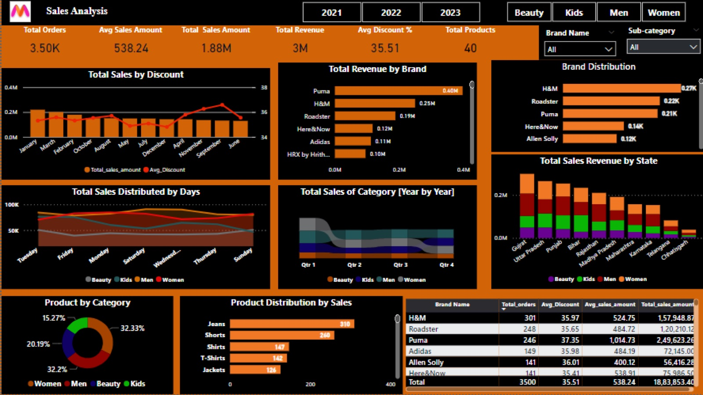
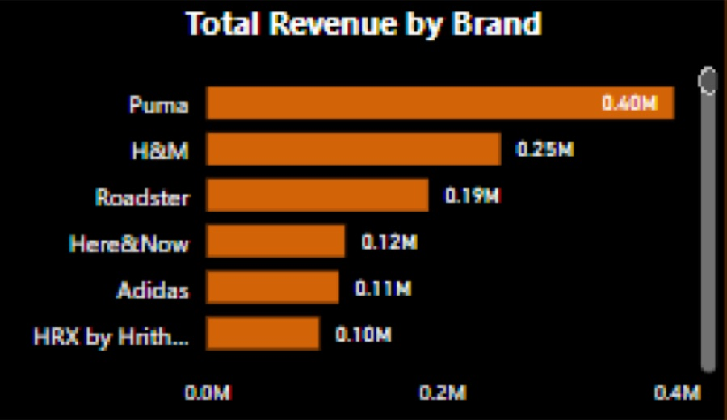
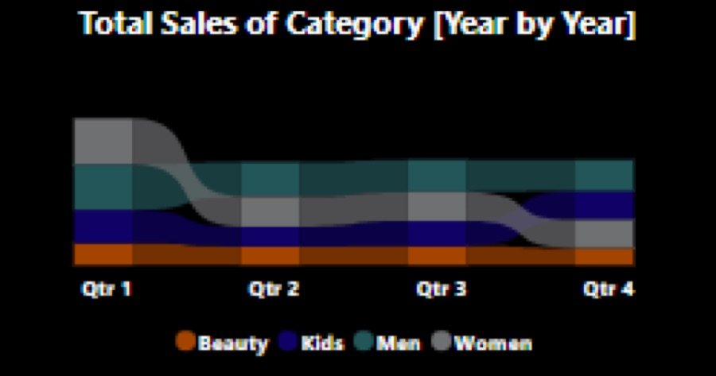
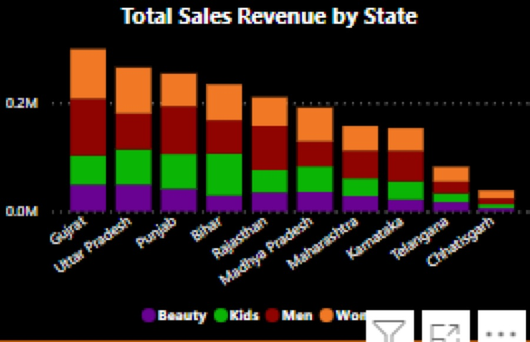
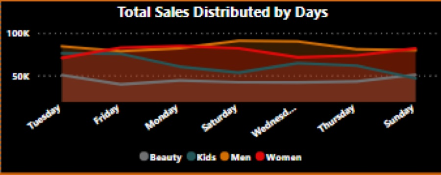

Overview
Fashion e-commerce platforms lose revenue to high return rates, driven largely by low confidence in size and fit.
I wrote the business requirements, defined KPIs, and built an interactive Power BI dashboard on Kaggle's Myntra sales data. The analysis traced returns to size and fit issues and proposed product changes to reduce them.
Highlights
- Business requirements and KPIs: revenue, orders, sales amount, total products
- Top brands by revenue and owned-brand product counts
- Daily sales by category and sales across 20+ states
- Size/fit insight → projected 15% drop in return rate
Approach
- 01
Define the problem
High returns, low size/fit confidence and revenue leakage; target users are first-time and unsure shoppers.
- 02
Clean & model data
Prepared 10K+ Kaggle sales records in Excel and modeled them in Power BI.
- 03
Build the dashboard
KPI cards, brand revenue, category trends and a state-level sales map.
- 04
Recommend fixes
Size-and-fit guidance and product insights aimed at a 15% lower return rate.
Dashboard





Tech stack
The .pbix dashboard file, dataset, business requirements doc and slide deck are in the GitHub repo.